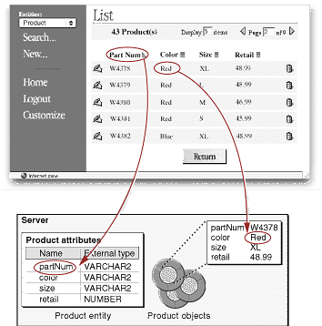
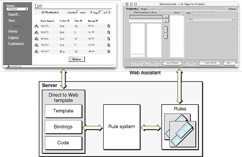

| PATH |

As you have seen, Direct to Web applications have a fixed structure. They consist of a set of task pages (for example, query, list, and edit pages) that work for any type of enterprise object. These task pages are created using special WebObjects components called Direct to Web templates.
A Direct to Web template uses information from the entities of the enterprise objects it displays. An entity is the piece of the model that specifies how a table maps to a specific enterprise object. The Direct to Web template takes advantage of the entity's property information (that is, information about the entity's attributes and relationships) and determines the properties it needs to display. For example, a Direct to Web template displaying a list page for Movie objects can determine that it needs to display the title, release date, category, and other attributes for each movie on the page ( Figure 5-11).
Figure 5-11 Determining attributes from the entity
Direct to Web applications can be configured using a Java applet called the Direct to Web Assistant. The configuration information is stored as a database of rules. Rules say something like "if the task page is a list page and the entity is the Movie entity, do not display the banner." Each rule has a priority and rules with higher priority override rules with lower priority. Direct to Web defines a set of default rules that define the basic application behavior. You can define higher priority rules that override the default rules for special cases. This is exactly what the Direct to Web Assistant does. Figure 5-12 shows the relationship between the Direct to Web template, the rule system, the rule database, and the Direct to Web Assistant.
Figure 5-12 The Direct to Web rule system
Note that when you configure your application with the Direct to Web Assistant, you don't need to recompile your code to try your changes. Direct to Web is not a code generation wizard. It generates Web pages at runtime based on the templates and the rules.
© 2001 Apple Computer, Inc.